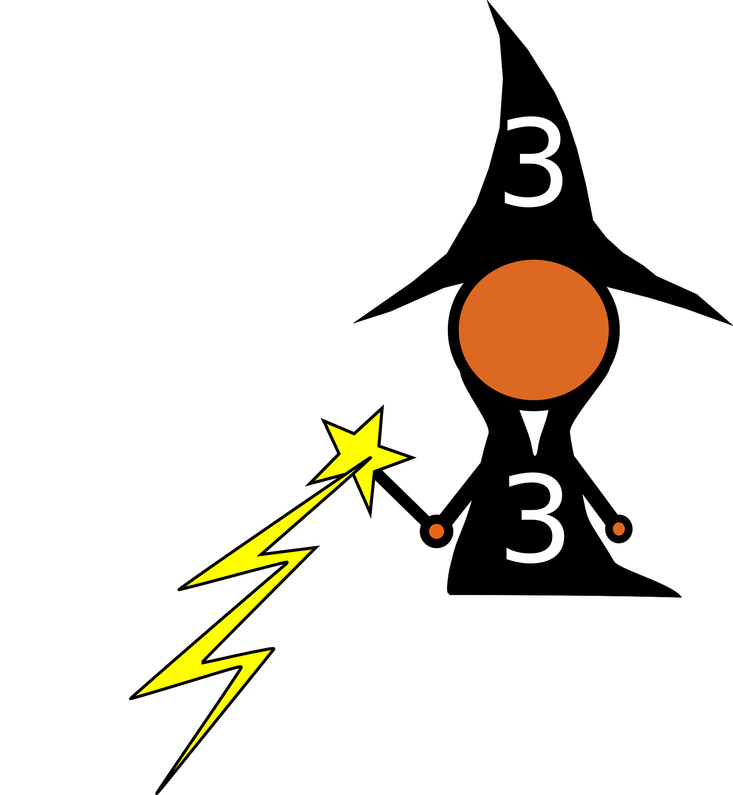
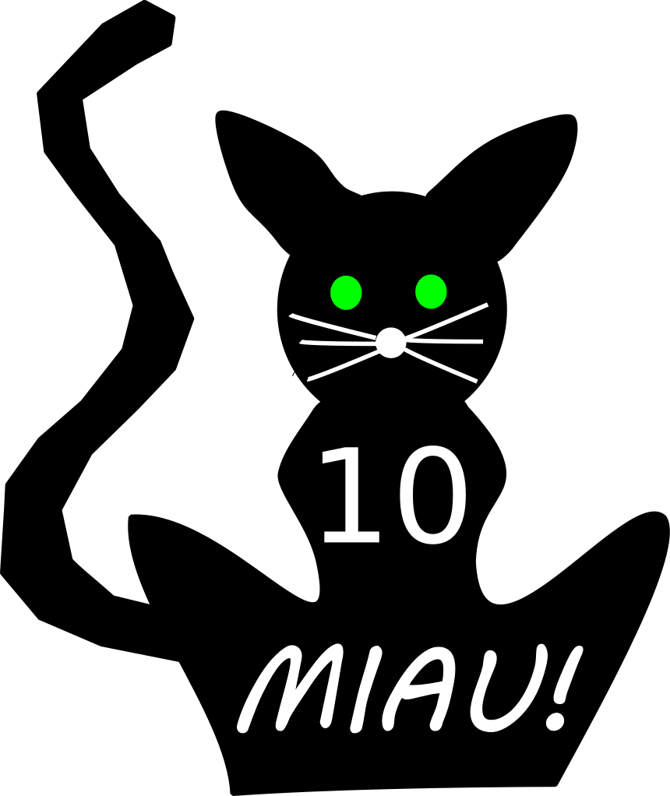

Grundprinzip:
Grundlage für die Bodensee MauMau-Regeln sind die normalen MauMau-Regeln. Das heißt, man kann gleiche Farbe auf gleiche Farbe und gleiche Zahl auf gleiche Zahl legen. (Bzw. Dame auf Dame und 4 auf 4) Legt ein Spieler seine letzte Karte ab, so sagt er "Mau Mau". Anschließend muss er noch "Matt" sagen, sobald es keine Möglichkeit mehr gibt, dass dieser Spieler doch wieder Karten erhält.Beispiel: Legt Spieler A seine letzte Karte, eine 7, auf den Stapel, sagt er zunächst nur "Mau Mau", da es sein kann, dass er 4 Karten ziehen muss, wenn der Spieler, der nach ihm an der Reihe ist eine 7 spielt. Es gibt auch noch andere Situationen, bei denen es zu einem ähnlichen Fall kommen kann, insbesondere bei den Karten 5 oder 6. (Mehr dazu später) Das Spiel ist beendet, sobald sich nur noch zwei Spieler mit Karten im Spiel befinden. Wird mit mehr als drei Personen gespielt, so gibt es mehrere Gewinner, d.h. alle die keine Karten mehr haben. Jedes Spiel hat zwei Verlierer.
Spielvorbereitung:
Es wird mit einem Romme/Canasta-Deck gespielt (2x52 Karten). Ein Spieler beginnt mit dem Austeilen und gibt jedem Spieler 5 Karten. Haben alle Spieler ihre Karten auf der Hand, so deckt der austeilende Spieler die erste Karte vom Stapel auf. Diese wird so gewertet, als hätte sie der austeilende Spieler selbst gelegt. Gespielt wird zunächst im Uhrzeigersinn.Bedeutung der Karten:
- 2:
- Die 2 kann wie eine normale Karte gespielt werden. Liegt keine Karte auf dem Stapel (Dieser Spezialfall wird weiter unten nochmals erklärt), so muss hier zunächst eine 2 gespielt werden. Anschließend kann ganz normal mit allen Karten weitergespielt werden. .
- 3: 
- Die 3 kann immer gespielt werden, auch wenn der Spieler der sie spielt selbst nicht am Zug ist. Sie zählt nicht als Zug, d.h. wenn ein Spieler an der Reihe ist und eine 3 legt, muss er dennoch seinen Zug spielen. Die 3 ist eine Sonderkarte. Legt ein Spieler eine 3, so wird die Wirkung der darunterliegenden Karte aufgehoben. Legt jemand beispielswiese eine 7, so kann man die Wirkung der 7 (zwei Katen ziehen) durch die 3 aufheben. Für den folgenden Zug ist dann die unter der eliminierten Karte liegende Karte maßgeblich. Liegt unter der aufgehobenen 7 z.B. eine Pik 5, so kann man nun als nächstes eine Pik Karte oder eine 5 legen. Ein Sonderfall liegt vor, wenn man auf eine 3 noch eine 3 legt. In diesem Fall wird die zuerst gespielte 3 aufgehoben und die Wirkung der Karte die unter ihr liegt, erlangt ihre Wirkung wieder zurück. Eine 3 kann immer gespielt werden, außer mit der Ausführung der Wirkung der unter der 3 liegenen Karte wurde bereits begonnen.
- 4:
- Die 4 ist eine Trinkkarte. Der Spieler der sie spielt muss einen Schluck trinken (Variante für Erwachsene und Jugendliche).
- 5:
- Wird eine 5 gelegt, so müssen alle Spieler so schnell wie möglich die linke Hand aufeinander auf den Tisch legen. Derjenige, der die 5 gespielt hat, darf seine Hand nicht als Erster auf den Tisch legen. Wer seine Hand zuletzt auf den Tisch gelegt hat, muss eine Strafkarte ziehen. Wer die rechte Hand hingelegt hat, muss zwei Strafkarten ziehen. Treten beide Fälle ein (Letzter + rechte Hand), muss der entsprechende Spieler 3 Karten ziehen.
- 6:
- Die 6 hat die gleiche Wirkung wie die 5, nur betrifft sie die rechten Hand (also Strafkarte bei Gebrauch der linken Hand).
- 7:
- Legt in Spieler eine 7, muss der Spieler der als nächstes an der Reihe ist 2 Karten ziehen. Hat dieser Spieler auch eine 7, so kann er die 7 "weitergeben". Der erste Spieler der dran ist und keine 7 mehr hat, zieht dann für jede 7 auf dem Stapel 2 Karten und darf danach keine Karte mehr legen. Danach geht es mit dem nächsten Spieler weiter.
- 8:
- Die 8 führt dazu, dass der nächste Spieler aussetzen muss, es sei denn, dieser Spieler hat auch eine 8. In diesem Fall muss dann der Spieler, der nach diesem Spieler dran ist aussetzen ("weitergeben" Effekt wie bei der 7) usw.
- 9:
- Wird eine 9 gelegt, so darf ein beliebiger anderer Spieler (der nicht an der Reihe sein muss) eine Karte seiner Wahl, die auf die 9 passt, sofort hinlegen. Dieses "Reinwerfen" zählt als Zug, so dass dann der Spieler neben dem Spieler, der die 9 gelegt hat als näcshtes an der Reihe ist.
- 10: 
- Legt ein Spieler eine 10, so muss dieser sofort "Miau" sagen. Man kann beliebig viele 10er gleichzeitig legen. Entsprechend muss dann für jede 10 ein "Miau" gesagt werden. Vergisst ein Spieler "Miau" zu sagen, muss er eine Strafkarte ziehen. Es ist dann zu spät zum "Miau" sagen, wenn der nächste Spieler bereits mit seinem Zug begonnen hat.
- Bube:
- Der Spieler, der diese Karte spielt, darf sich eine Farbe wünschen. Diese Karte kann auf alle Karten außer aud die 7 und auf die 8 gelegt werden, es sei denn, diese wurden bereits durch die 3 "entschärft".
- Dame:
- Der Spieler, der diese Karte legt, muss seine Karten mit den Karten eines beliebigen Mitspielers tauschen.
- König:
- Wird diese Karte gelegt, so wird die Spielrichtung gewechselt.
- Ass:
- Legt ein Spieler ein Ass, so darf er nochmals eine passende Karte darauf ablegen.
- Joker:
- Hat man einen Joker auf der Hand, so kann man diesen zu jeder Zeit vor sich hinlegen (Nicht auf den Ablagestapel). Hat man aktuell die meisten Joker vor sich liegen, so hat man das "Reinwerfprivileg". Das bedeutet, dass man jederzeit eine beliebige, passende Karte auf den Ablagestapel werfen darf. Hat der Spieler eine Karte reingeworfen, so muss er warten, bis er wieder am Zug ist, um dann wieder eine passende Karte reinwerfen zu können. Es kann immer nur ein Spieler das "Reinwerfprivileg" haben. Haben also mehrere Spieler gleich viele Joker vor sich liegen, so erhält derjenige das "Reinwerfprivileg", der seinen Joker als letztes abgelegt hat. Das Reinwerfen zählt auch hier als Zug, so dass dann der Spieler neben demjenigen, der reingeworfen hat an der Reihe ist. Muss ein Spieler der Joker vor sich liegen hat eine Karte ziehen (sei es, weil er nicht spielen kann oder weil er Strafkarten aufnehmen muss), so muss er pro gezogene Karte einen vor sich liegenden Joker auf den Ablagestapel ablegen, so dass dann eventuell ein anderer Spieler das "Reinwerfprivileg" erhält.


Strafkarten:
Wer vergisst, "Mau", "Mau Mau", "Miau", oder "Matt" zu sagen, muss eine Strafkarte ziehen. Zu spät ist es ab dem Zeitpunkt, ab dem der nächste Spieler seinen Zug begonnen hat. Wird auf eine 9 eine nicht passende Karte geworfen, so muss ebenfalls eine Strafkarte gezogen werden. Ebenso, wenn ein Spieler mit dem "Reinwerfprivileg" eine falsche Karte reinwirft.Besondere Spielsituationen:
 Ist die vom Austeiler aufgedeckte Karte eine 3, so ist der Ablagestapel leer. Dies ist auch
der Fall, wenn Wirkung der ersten
Karte von einem anderen Spieler durch eine 3 aufgehoben wird. In diesem Fall muss ein beliebiger Spieler zunächst
eine
2 legen, bevor das Spiel fortgesetzt weden kann.
Ist die vom Austeiler aufgedeckte Karte eine 3, so ist der Ablagestapel leer. Dies ist auch
der Fall, wenn Wirkung der ersten
Karte von einem anderen Spieler durch eine 3 aufgehoben wird. In diesem Fall muss ein beliebiger Spieler zunächst
eine
2 legen, bevor das Spiel fortgesetzt weden kann.
Liegen 4 gleiche Karten (von der Zahl her) aufeinander auf dem Ablagestapel, so erhält der Spieler, der die 4. Karte gelegt hat einen "Pilz". Dieser Spieler kann diesen "Pilz" einsetzen, um einen anderen Spieler, der bereits ein Gewinner ist, wieder in das Spiel zurückzuholen. Dieser Spieler ist dann kein Gewinner mehr sondern nur noch ein "stiller Gewinner". Das bedeutet, dass er ab sofort wieder am Spiel teilnimmt, obwohl er keine Karten auf der Hand hat. Er muss auch nicht ziehen d.h. er wird, wenn er an der Reihe ist übersprungen. Sobald ein stiller Gewinner wieder zu einer Karte kommt, sei es durch eine Strafkarte, oder weil ein anderer Spieler seine Karten mit denen des stillen Gewinners getauscht hat, nimmt dieser Spieler wieder wie die restlichen Spieler am Spiel teil. Ein Spieler kann seine Karten mit den nicht vorhanden Karten eines stillen Gewinners z.B. durch die Wirkung einer Dame tauschen. Dadurch hat dieser Spieler selbst keine Karten mehr und wird zum (richtigen) Gewinner, sobald er "Mau Mau", "Matt" gesagt hat. Pro Spiel kann es maximal zwei Pilze geben. Ein Spieler (Gewinner) der nicht mehr im Spiel ist, kann keinen Pilz anwenden.
Hat sich die Kartenzahl eines Spielers nach irgendeinem Vorkommnis auf eine Karte erhöht oder reduziert, so muss dieser "Mau" sagen. Vergisst er dies, muss er eine Strafkarte ziehen. Dieser Fall tritt z.B. auch dann ein, wenn ein Spieler seine Karten mit einem Spieler, der nur noch eine Karte hat, getauscht hat.
Wird eine 6 auf eine 5 gelegt (oder anders herum), dann müssen alle Spieler beide Hände aufeinander auf den Tisch legen. Der letzte Spieler muss zwei Strafkarten ziehen, wenn seine beiden Hände die letzten sind, ansonsten nur eine Strafkarte.
Rangfolgeregeln:
In manchen Situationen kommt es vor, dass ein Spieler gleichzeitig "Mau","Miau""Mau Mau" oder "Matt" sagen müsste. Für diese Situationen gibt es folgende Rangfolge, nach welcher die Worte gesagt werden mussen:"Mau", "Miau", "Mau Mau", "Matt"
Beispiele: Hat ein Spieler als letzte Karte eine 10 und legt diese ab, so muss dieser zuerst "Miau" fur die 10, dann "Mau Mau" und dann "Matt" sagen. Spezialfall: Hat ein Spieler zwei 10ner auf der Hand, so kann er diese nach der Regel fur die Karte 10 gleichzeitig legen. Von den beiden 10ern ist allerdings eine 10 die letzte Karte. Nun gilt folgende Rangfolge: Nach Ablegen der ersten 10 muss "Mau" und "Miau" gesagt werden. (Da letzte Karte und eine 10, aber "Mau" steht in der Rangfolge vor "Miau"). Nach dem Ablegen der zweiten 10 muss "Miau", "Mau Mau", "Matt" gesagt werden. Die korrekte Reihenfolge für das Ablegen beider 10ner auf einmal wäre also: "Mau", "Miau", "Miau", "Mau Mau", "Matt" Beendet ein Spieler das Spiel mit drei 10ern auf einmal, wäre diese Reihenfolge korrekt:
"Miau", "Mau", "Miau", "Miau", "Mau Mau", "Matt" usw.